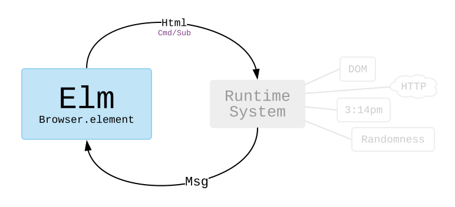

Commands and Subscriptions
Earlier in this book we saw The Elm Architecture handle mouse and keyboard interactions, but what about talking to servers? Generating random numbers?
To answer these questions, it helps to learn more about how The Elm Architecture works behind the scenes. This will explain why things work a bit differently than in languages like JavaScript, Python, etc.
sandbox
I have not made a big deal about it, but so far all of our programs were created with Browser.sandbox. We gave an initial Model and describe how to update and view it.
You can think of Browser.sandbox as setting up a system like this:

We get to stay in the world of Elm, writing functions and transforming data. This hooks up to Elm’s runtime system. The runtime system figures out how to render Html efficiently. Did anything change? What is the minimal DOM modification needed? It also figures out when someone clicks a button or types into a text field. It turns that into a Msg and feeds it into your Elm code.
By cleanly separating out all the DOM manipulation, it becomes possible to use extremely aggressive optimizations. So Elm’s runtime system is a big part of why Elm is one of the fastest options available.
element
In the next few examples, we are going to use Browser.element to create programs. This will introduce the ideas of commands and subscriptions which allow us to interact with the outside world.
You can think of Browser.element as setting up a system like this:

In addition to producing Html values, our programs will also send Cmd and Sub values to the runtime system. In this world, our programs can command the runtime system to make an HTTP request or to generate a random number. They can also subscribe to the current time.
I think commands and subscriptions make more sense when you start seeing examples, so let’s do that!
Note 1: Some readers may be worrying about asset size. “A runtime system? That sounds big!” It is not! In fact, Elm assets are exceptionally small when compared to popular alternatives.
Note 2: We are going to use packages from
package.elm-lang.orgin the upcoming examples. We have already been working with a couple:But now we will start getting into some fancier ones:
There are tons of other packages on
package.elm-lang.orgthough! So when you are making your own Elm programs locally, it will probably involve running some commands like this in the terminal:elm init elm install elm/http elm install elm/randomThat would set up an
elm.jsonfile withelm/httpandelm/randomas dependencies.I will be mentioning the packages we are using in the following examples, so I hope this gives some context on what that is all about!